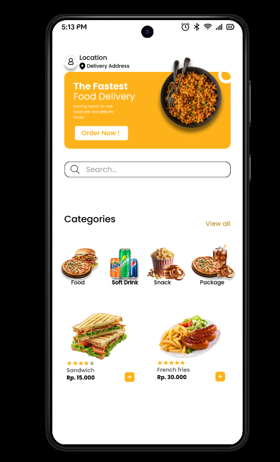

UI Figma Design
UI Design & Prototyping
Desain antarmuka aplikasi dan website yang dirakit di Figma dengan component library, auto-layout, dan design tokens agar konsisten, mudah dikembangkan, dan mempercepat komunikasi antara desain dan developer.

Desain antarmuka aplikasi dan website yang dirakit di Figma dengan component library, auto-layout, dan design tokens. Pendekatan berbasis sistem ini membuat desain konsisten, mudah dikembangkan, dan mempercepat komunikasi antara desain dan developer.
Konsep mengutamakan usability dan konsistensi. Layout disusun dengan spacing yang teratur, komponen reusable yang menerapkan auto-layout, serta design tokens untuk warna, tipografi, dan radius — sehingga setiap layar terasa serasi dan intuitif bagi pengguna.
Dari riset hingga prototipe interaktif
Research
Memahami kebutuhan pengguna, tujuan produk, dan struktur informasi.
Wireframe
Menyusun kerangka antarmuka dan alur pengguna pada setiap layar.
UI Design
Membangun komponen, design tokens, dan visual final di Figma.
Prototype
Menghubungkan layar menjadi prototipe interaktif untuk diuji.
UI Figma Design — UI Design & Prototyping. Dibangun dengan component library dan design tokens di Figma.
arrow_backBack to Selected Works